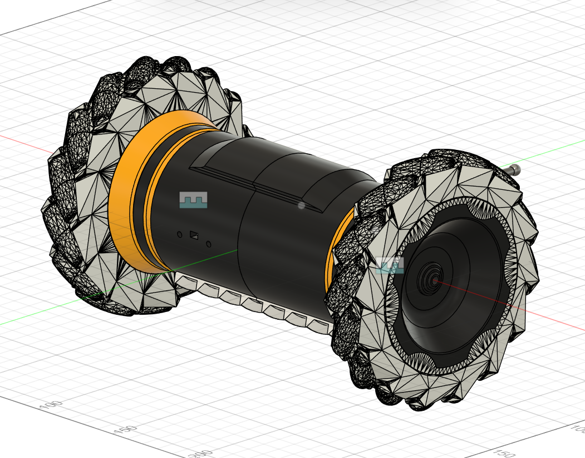
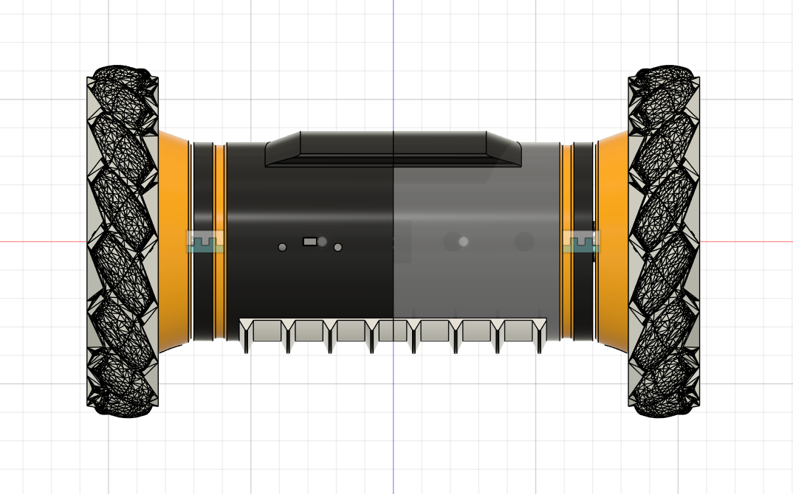

About the Platform
TerraGator is MIL's flagship autonomous unmanned ground vehicle (UGV), built to showcase the lab's capabilities in full outdoor autonomy — perception, planning, and control on unstructured terrain. The platform is a long-running collaborative effort involving multiple undergraduate and graduate researchers, each owning specific subsystems.
My Contributions
- Electrical Box: Redesigned and fabricated a new modular enclosure with DIN rail organization, cable gland sealing, and integrated sensor mounts for field serviceability.
- Motor Sizing: Performed full torque analysis — computing required wheel torque from vehicle mass, grade angle, and rolling resistance — to validate and select replacement drive motors.
- Drive System Prototypes: Designed and built the first 3 prototype iterations of the upgraded wheel mounts, motor interfaces, and servo-steering linkage hardware.
- Collaboration: Coordinated with lab members working on perception and software to align mechanical interface dimensions and mounting points across subsystems.


